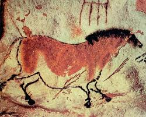

Prehistoric Cave Paintings Took up to 20,000 Years to Complete
It may have taken Michelangelo four long years to paint his fresco on the ceiling of the Sistine Chapel, but his earliest predecessors spent considerably longer perfecting their own masterpieces. Scientists have discovered that prehistoric cave paintings took up to 20,000 years to complete. Rather than being created in one session, as archaeologists previously thought, many of the works discovered across Europe were produced over hundreds of generations, who added to, refreshed and painted over the original pieces of art.
Until now it has been extremely difficult to pinpoint when prehistoric cave paintings and carvings were created, but a pioneering technique is allowing researchers to date cave art accurately for the first time and show how the works were crafted over thousands of years. Experts now hope the technique will provide a valuable insight into how early human culture developed and changed as the first modern humans moved across Europe around 40,000 years ago.
Dr Alistair Pike, an archaeologist at Bristol University who is leading the research, said:The art gives us a really intimate window into the minds of the individuals who produced it, but what we don’t know is exactly which individuals they were as we don’t know exactly when the art was created. If we can date the art then we can relate that to the artefacts we find in the ground and start to link the symbolic thoughts of these individuals to where, when and how they were living.’
Hundreds of caves have been discovered across Europe with elaborate prehistoric paintings and carvings on their walls. It is thought the designs, which often depict scenes of animals, were created up to 40,000 years ago – some time after humans began moving from southern Europe into northern Europe during the last ice age.
Traditional dating techniques have relied on carbon dating the charcoal and other pigment used in the paintings, but this can be inaccurate as it only gives the date the charcoal was created not when the work was crafted.’When you go into these caves today there is still charcoal lying on the ground, so the artists at the time could have been using old charcoal rather than making it fresh themselves,’ explained Dr Pike.
‘If this was the case, then the date for the painting would be very wrong. Taking samples for carbon dating also means destroying a bit of these precious paintings because you need to take away a bit of the pigment. For carvings, it is virtually impossible to date them as there is no organic pigment containing carbon at ail.’
The scientists have used their technique to date a series of famous Palaeolithic paintings in Altamira cave, northern Spain. Known as the ‘Sistine Chapel of the Palaeolithic’, the elaborate works were thought to date from around 14,000 years ago. But in research published by the Natural Environment Research Council’s new website Planet Earth, Dr Pike discovered some of the paintings were between 25,000 and 35,000 years old. The youngest paintings in the cave were 11,000 years old. Dr Pike said:’We have found that most of these caves were not painted in one go, but the painting spanned up to 20,000 years.This goes against what the archaeologists who excavated in the caves found. It is probably the case that people did not live in the caves they painted. It seems the caves they lived in were elsewhere and there was something special about the painted caves.’
Dr Pike and his team were able to date the paintings using a technique known as uranium series dating, which was originally developed by geologists to date rock formations such as stalactites and stalagmites in caves. As water seeps through a cave, it carries extremely low levels of dissolved radioactive uranium along with the mineral calcium carbonate. Over time small amounts of calcium carbonate are deposited to form a hard layer over the paintings and this layer also traps the uranium. Due to its radioactive properties, the uranium slowly decays to become another element known as thorium. By comparing the ratio of uranium to thorium in the thin layers on top of the cave art, the researchers were able to calculate the age of the paintings.
The researchers have also applied their technique to engravings found in rocks around Creswell Crags in Derbyshire, which are Britain’s only examples of ice age cave art. They proved the engravings were made at least 12,000 years ago. Professor Pablo Arias, an expert on Palaeolithic cave art at the University of Cantabria, Spain, said: ‘Until about ten years ago it was only possible to date cave art by using the style of the figures, but this new technique developed by Bristol University allows that date to be accurately bracketed. We want to study how the people of the time behaved and how they felt and Palaeolithic art gives us a way of looking at the type of symbols that were important to them, so we need to know when the people who were making the art actually lived.’
Questions 1-5
Do the following statements agree with the information given in Reading Passage 1? Write
TRUE if the statement agrees with the information
FALSE if the statement contradicts the information
NOT GIVEN if there is no information on this
1 Cave paintings inspired Michelangelo to paint the ceiling of the Sistine Chapel.
2 It now seems that cave paintings were painted in one go and then left untouched.
3 Dr Pike is focusing on dating artefacts found on the ground in the caves.
4 There are a number of disadvantages to using carbon dating to date paintings and carvings.
5 The Altamira cave contains more cave paintings than any other cave in Europe.
Questions 6-8
Choose the correct letter, A, B, C or D.
6 Dr Pike believes that
A most caves remained undiscovered for thousands of years.
B archaeologists should not have excavated the caves at all.
C the caves were uninhabited but were treated as important.
D the paintings were painted by the people living in the caves.
7 Uranium series dating
A was previously used for other purposes.
B is a technique which was invented by Dr Pike.
C relies on the presence of stalactites in the caves.
D only works with caves which are underwater.
8 Professor Pablo Arias
A is sceptical about the benefits of the new dating technique.
B is enthusiastic about what the new technique will achieve.
C used the technique to successfully date Creswell Crags.
D believes it is necessary only to study the symbols in the art.
Questions 9-14
What is said about each of these things found in the caves?
Choose your answers from the box and write the letters A-H next to Questions 9-14.
| A When this is removed, it damages the painting.
B This can damage the stalactites and stalagmites in the caves. C Over time, this turns into a different element. D We could determine when it was made, but not when it was used. E This is produced as a result of radioactive decay. F Scientists used to think that this was a mineral. G This contains no carbon-based elements at all. H This can act as a firm coating over something. |
9 charcoal
10 pigment
11 carving
12 uranium
13 calcium carbonate
14 thorium
---End of the Test---
Please Submit to view your score, solution and explanations.